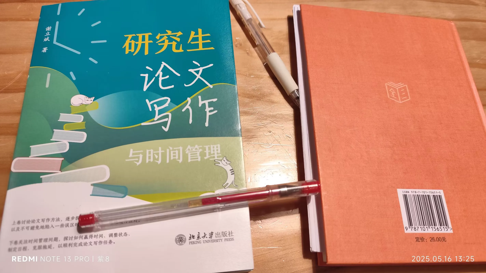
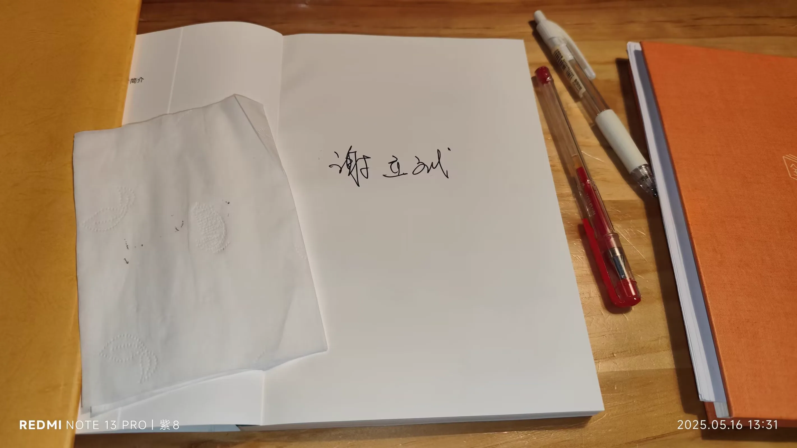
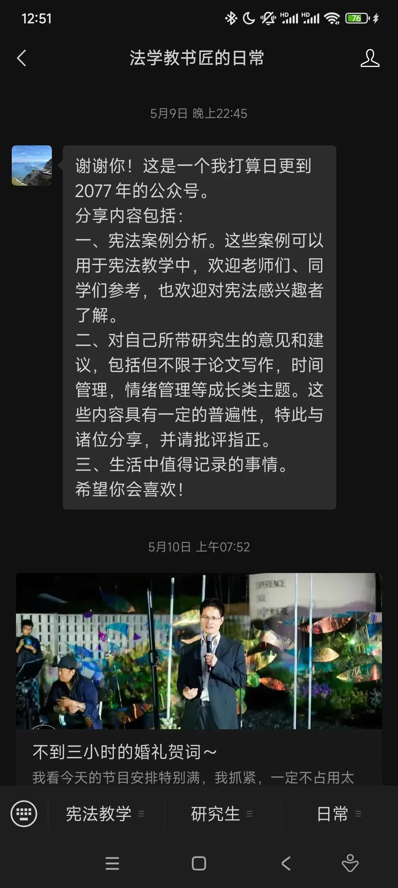
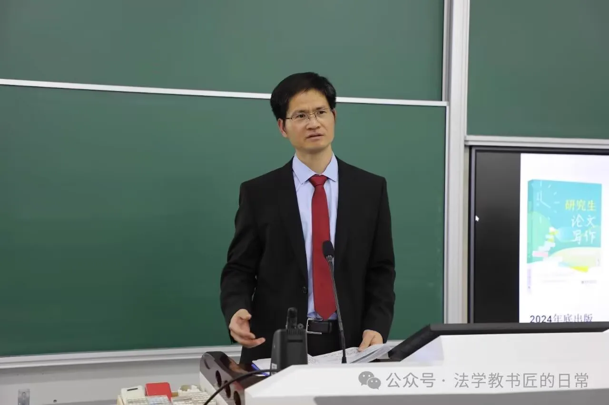
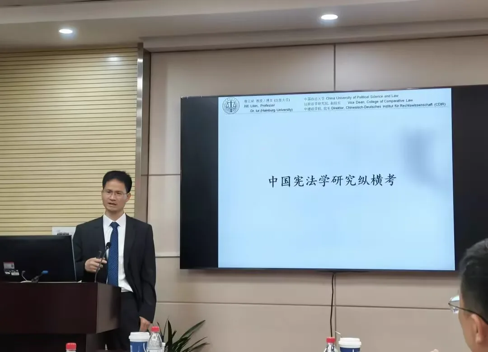
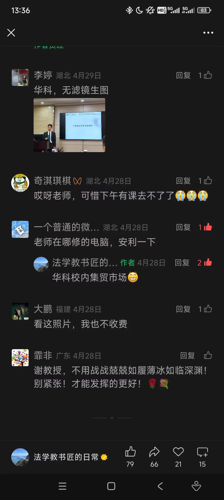
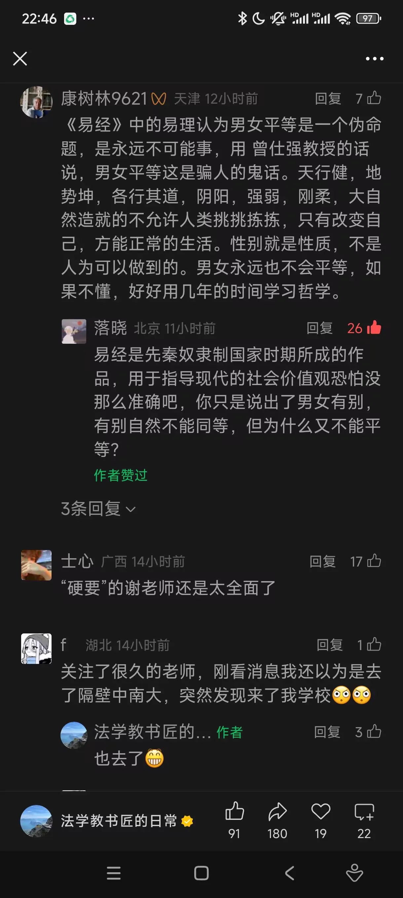

Journal · 2025-05-16
定位华中科技大学西华园文化餐吧
这个月，就是五月，天气好的梦寐以求。
五月上旬某夜，法学院的程老师发给我一个公众号名片，是谢立斌教授的号。我饶有兴趣地关注了。彼时我在喻家山下骑车狂飙，四野无风，夜晚显得十分静谧，空气中有着微微的寒意。
据王建学了解，谢教授在学术交流中有受虐狂倾向，批评越狠，他越高兴，越过瘾，事后还会津津有味回顾，把自己被拍砖的经历写下来公之于众。而对理性客观中立的溢美之辞，他基本上是听而不闻的。
谢教授可真有人格魅力！他的言论和思想，很适合作为我的理论武器！
一个人可以被剥夺任何东西，除了这个人最后的自由，在既定的环境下选择自己抱持什么态度的自由，能够自主“回应”自身所需的自由。
“反应”和“回应”，前者是条件反射，后者是有意识的选择。谢教授精通德语，但我想送他一个“昆雅语”祝福：
Elensílalúmennomentilmon.
意译为：与君相逢，星辰闪耀。
时光轴记录
2025年5月16日 13:59
这个月，就是五月，天气好的梦寐以求。
五月上旬某夜，法学院的程老师发给我一个公众号名片，是谢立斌教授的号。我饶有兴趣地关注了。彼时我在喻家山下骑车狂飙，四野无风，夜晚显得十分静谧，空气中有着微微的寒意。
据王建学了解，谢教授在学术交流中有受虐狂倾向，批评越狠，他越高兴，越过瘾，事后还会津津有味回顾，把自己被拍砖的经历写下来公之于众。而对理性客观中立的溢美之辞，他基本上是听而不闻的。
谢教授可真有人格魅力！他的言论和思想，很适合作为我的理论武器！
一个人可以被剥夺任何东西，除了这个人最后的自由，在既定的环境下选择自己抱持什么态度的自由，能够自主“回应”自身所需的自由。
“反应”和“回应”，前者是条件反射，后者是有意识的选择。
谢教授精通德语，但我想送他一个“昆雅语”祝福：Elen síla lúmenn omentilmon.
意译为：与君相逢，星辰闪耀。
柴江赣北 : 集贸市场可以修电脑️，我才知道
2025年5月16日 14:00
梅语扬 : 我去谢老师
2025年5月16日 16:14







May 16, 2025 13:59
This month, May, the weather is as good as one could dream of.
One night in early May, Teacher Cheng of the law school sent me a WeChat official-account card — it was Professor Xie Libin's account. I followed it with great interest. At that moment I was cycling fast at the foot of Yujia Mountain; there was no wind anywhere, the night felt very quiet, and there was a faint chill in the air.
According to Wang Jianxue, Professor Xie has a masochistic tendency in academic exchanges: the harsher the criticism, the happier and more thrilled he is, and afterward he will relish reviewing it, writing down and making public the experience of being bashed. As for rational, objective, and neutral praise, he basically turns a deaf ear to it.
Professor Xie really has charisma! His words and ideas are perfect to serve as my theoretical weapons!
A person can be deprived of anything except this last freedom: the freedom to choose what attitude to hold in given circumstances, and the freedom to autonomously "respond" to what he himself needs.
"Reacting" and "responding": the former is a conditioned reflex, the latter a conscious choice.
Professor Xie is proficient in German, but I'd like to send him a blessing in "Quenya": Elen síla lúmenn omentilmon.
Freely translated: When I meet you, the stars shine.
柴江赣北 : I only just learned that the market can fix computers
May 16, 2025 14:00
梅语扬 : I'm going to Teacher Xie
May 16, 2025 16:14
16 mai 2025 13:59
Ce mois-ci, en mai, le temps est aussi beau qu'on puisse en rêver.
Une nuit de début mai, le professeur Cheng de la faculté de droit m'a envoyé la carte d'un compte WeChat officiel, celui du professeur Xie Libin. Je l'ai suivi avec grand intérêt. À ce moment-là, je fonçais à vélo au pied du mont Yujia ; aucun vent ne soufflait, la nuit paraissait très paisible et l'air avait une légère fraîcheur.
D'après Wang Jianxue, le professeur Xie a un penchant masochiste dans les échanges académiques : plus la critique est sévère, plus il est content et ravi, et ensuite il se plaît à revenir dessus avec délectation, en couchant par écrit et en rendant publique son expérience d'avoir été « démoli ». Quant aux éloges rationnels, objectifs et neutres, il fait la sourde oreille.
Le professeur Xie a vraiment du charisme ! Ses propos et ses idées sont tout à fait propres à me servir d'armes théoriques !
On peut priver une personne de tout, sauf de cette ultime liberté : celle de choisir, dans des circonstances données, l'attitude à adopter, et celle de pouvoir « répondre » librement à ses propres besoins.
« Réagir » et « répondre » : le premier est un réflexe conditionné, le second un choix conscient.
Le professeur Xie maîtrise l'allemand, mais je voudrais lui offrir une bénédiction en « quenya » : Elen síla lúmenn omentilmon.
Traduction libre : Quand je vous rencontre, les étoiles brillent.
柴江赣北 : Je viens seulement d'apprendre qu'on peut faire réparer des ordinateurs au marché
16 mai 2025 14:00
梅语扬 : Je vais chez le professeur Xie
16 mai 2025 16:14
16.05.2025 13:59
Dieser Monat, der Mai, das Wetter ist so gut, wie man es sich nur erträumen kann.
In einer Nacht Anfang Mai schickte mir Lehrer Cheng von der juristischen Fakultät die Karte eines offiziellen WeChat-Kontos, nämlich das von Professor Xie Libin. Ich folgte ihm mit großem Interesse. In jenem Moment raste ich am Fuße des Yujia-Bergs mit dem Fahrrad dahin; es herrschte völlige Windstille, die Nacht wirkte sehr still, und in der Luft lag eine leichte Kühle.
Laut Wang Jianxue hat Professor Xie im akademischen Austausch eine masochistische Neigung: Je härter die Kritik, desto glücklicher und begeisterter ist er, und hinterher lässt er das Erlebnis, "fertiggemacht" worden zu sein, mit Genuss Revue passieren, indem er es aufschreibt und öffentlich macht. Gegenüber rationalem, objektivem und neutralem Lob ist er dagegen im Grunde taub.
Professor Xie hat wirklich Charisma! Seine Aussagen und Gedanken eignen sich hervorragend als meine theoretischen Waffen!
Einem Menschen kann alles genommen werden, außer dieser letzten Freiheit: der Freiheit, unter gegebenen Umständen selbst zu wählen, welche Haltung er einnimmt, und der Freiheit, eigenständig auf seine eigenen Bedürfnisse zu "antworten".
"Reagieren" und "Antworten": Ersteres ist ein bedingter Reflex, Letzteres eine bewusste Entscheidung.
Professor Xie beherrscht Deutsch, aber ich möchte ihm einen Segen auf "Quenya" schicken: Elen síla lúmenn omentilmon.
Frei übersetzt: Wenn ich dich treffe, leuchten die Sterne.
柴江赣北 : Ich habe gerade erst erfahren, dass man auf dem Markt Computer reparieren lassen kann
16.05.2025 14:00
梅语扬 : Ich gehe zu Lehrer Xie
16.05.2025 16:14